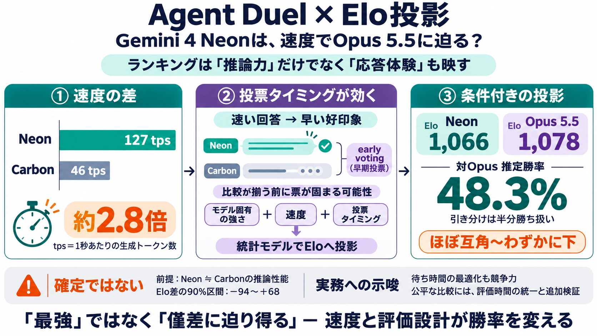

Gemini 4 Neon Beats Claude Opus 5.5, GPT 6.2 Sol On Most Benchmarks
Google has launched Gemini 4 Neon, the newest model in its Gemini 4 family, and the benchmark table it released has the …

Gemini 4 Neon（Neon）が、対戦ランキング上でどれほど強く見積もられるのかを、Elo投影と tps（tokens per second）の視点で整理します。
対戦型ベンチマーク（投票/ランキング）は、モデルの最終的な推論力だけでなく「応答体験」や「投票のタイミング」でも勝敗が動きます（＝純粋な実力比較になりにくい）。
同点近い実力でも、速く届く回答は投票で有利になりやすい—Elo の「勝ちやすさ」は、モデルの能力だけでなく“レース展開”を含んだ指標として働きえます。
過去の対戦データ（リーダーボード）から勝率を説明する要素を統計モデル化し、今回の Neon を「もし Carbon と同等性能で、かつ tps が高速なら」を条件に Elo に投影します。
記事では OpenRouter 経由の提供速度として Neon が 127 tps、比較対象 Carbon が 46 tps だった点を重視し、速度差が勝率に与える寄与を大きく見積もっています。
| モデル | tps | 含意（記事の読み） |
|---|---|---|
| Gemini 4 Carbon | 46 | 最大の弱点は「遅さ」になりうる |
| Gemini 4 Neon | 127 | 同等性能なら、速度優位でEloを押し上げやすい |
Neon が Carbon と同等の性能で、速度が観測通り 127 tps だと仮定すると、リーダーボード上の Elo を 1,066 と見積もるとされています。
Neon の Opus 5.5 に対する勝率は 48.3% と推定されます（引き分けは半分勝ち扱い）。つまり平均的には拮抗〜僅差です。
記事の分析では、勝率を説明する要素として「どのモデルか（モデル同一性）」と「速度（tps）」の寄与が大きいと示されています。
著者は、単純にモデリングすると説明力が落ち、early voting の扱いを含めることで推定が改善した、と整理しています。
対戦データで上位＝究極の推論力、とは限りません。速度や投票行動が強く効くなら、ランキングは“知能”より“体験設計”を含んでしまう可能性があります。
速度がランキングに効くなら、モデル選定だけでなく配信速度（tps）や評価タイミング設計が競争優位になります。評価方法自体の公平性も設計対象です。
記事の枠組みでは、Neon は Elo 1,066 程度で Opus 5.5（Elo 1,078）に“ほぼ同等〜僅差”で迫り得ます。ただし90%区間と仮定依存が大きく、確定より追加検証が必要です。
Google has launched Gemini 4 Neon, the newest model in its Gemini 4 family, and the benchmark table it released has the …
Claude Opus 5.5 is faster on OpenRouter, generating a median 69.0 tokens per second compared with 23.0 tokens per second…
Google also publishes its own benchmark table, in which Argon leads Claude Opus 5.5 on the majority of rows. That table…
Each axis is one of 8 personality indexes: the mean of its traits’ Elo z-scores, percentile ranked from 1 to 100 across …
Argon's headline DeepSWE v1.1 score is 77.9%, against 74.2% for Claude Opus 5.5 and 74.1% for GPT-6 Astra. Google's meth…